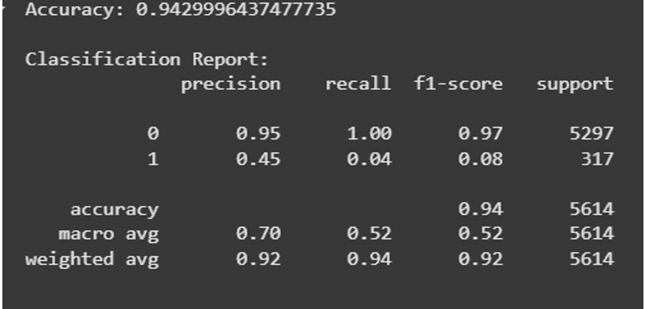

Introduction to Artificial Intelligence
Atamjon Raximov
Unit 21: Introduction to Artificial Intelligence
O'qituvchi: A'zamjon Boydedayev
Guruh raqmi: 24-213
Talaba ID: 240394
Taqdim etilgan sana: 31.05.2025
BTEC O'QUVCHILAR TOPSHIRIQLARINI BAHOLASH VA DEKLARATSIYASI
Baholash uchun ishlarni taqdim etganda, har bir o'quvchi ish o'ziniki ekanligini tasdiqlovchi deklaratsiyani imzolashi kerak.
O'quvchi (talaba) identifikatori: 240394
Baholovchi nomi: A'zamjon Boydedayev
BTEC dasturi nomi: Pearson BTEC Higher Nationals in Information Technologies
Birlik raqami va nomi: Introduction to Artificial Intelligence
Topshiriq nomi: Investigate, explore, and train your first model
Topshiriq topshirilgan sana: 31.05.2025
O'quvchi deklaratsiyasi
Ushbu topshiriq uchun taqdim etilgan ish meniki ekanligini tasdiqlayman. Ishda foydalanilgan manbalarga aniq havola qildim. Men noto'g'ri deklaratsiya noto'g'ri ishlashning bir shakli ekanligini tushunaman.
Mundarija
- 1. KIRISH4
- 2. TOPSHIRIQ A5
- P15
- P27
- M112
- D115
- 3. TOPSHIRIQ B17
- P317
- P418
- M220
- D221
- 4. TOPSHIRIQ C23
- P523
- M327
- D329
- 5. XULOSA30
- 6. MANBALAR RO'YXATI32
Kirish
Sun'iy intellekt (AI) zamonaviy biznes muhitida strategik qarorlar qabul qilish, operatsion samaradorlikni oshirish va innovatsiyalarni rivojlantirishda muhim vositaga aylandi. Ushbu hisobot sun'iy intellektning asosiy tushunchalari, uning turli sohalardagi qo'llanilishi va biznes ehtiyojlarini qondirish uchun AI yechimlarini rejalashtirish va ishlab chiqish jarayonlarini o'rganishga bag'ishlanadi.
Hisobotning maqsadi – korxona rahbariyatiga sun'iy intellektning afzalliklari, xavf-xatarlari, axloqiy va huquqiy jihatlari hamda ma'lumotlarga asoslangan yechimlar orqali tashkilotning raqobatbardoshligini oshirish imkoniyatlari haqida aniq va tushunarli ma'lumot taqdim etishdir.
Hisobot tuzilishi:
- Sun'iy intellektning qo'llanilishi va foydalanish sohalari: AI tushunchalari, turlari, yo'nalishlari va turli sohalardagi ilovalari, shuningdek, axloqiy va tashkiliy omillar tahlil qilinadi.
- Ma'lumotlarni to'plash va tayyorlash: AI yechimlari uchun yuqori sifatli ma'lumotlarni ta'minlash jarayonlari, ma'lumot turlari va ularning biznes maqsadlariga muvofiqligi ko'rib chiqiladi.
- AI yechimini ishlab chiqish va baholash: Bashoratli tahlil usullari, chiziqli va logistik regressiya algoritmlari yordamida yechim ishlab chiqish, xatolarni baholash va modelning samaradorligini optimallashtirish masalalari o'rganiladi.
Ushbu hisobot tashkilotning operatsion ehtiyojlarini qondirish uchun sun'iy intellekt yechimlarini muvaffaqiyatli joriy etishga yordam berishga qaratilgan bo'lib, matematik va texnik atamalardan to'g'ri foydalangan holda aniq va mantiqiy tuzilgan ma'lumotlarni taqdim etadi.
Topshiriq A
A.P1 - Sun'iy Intellektning Ta'rifi va Asosiy Tushunchalari
Sun'iy intellekt (AI) – bu kompyuter tizimlarining inson aqliga xos bo'lgan vazifalarni, masalan, o'rganish, muammolarni hal qilish, qaror qabul qilish va idrok etish kabi jarayonlarni bajarish qobiliyatini taqlid qilishga qaratilgan texnologiya va ilmiy sohadir. AI tizimlari ma'lumotlarni tahlil qilish, naqshlarni aniqlash va bashorat qilish orqali avtomatlashtirilgan yechimlarni taqdim etadi.
Kuchsiz AI (Narrow AI)
Muayyan vazifalarni bajarish uchun mo'ljallangan, cheklangan qobiliyatga ega tizimlar. Masalan, Siri yoki Google Translate kabi ilovalar tabiiy tilni qayta ishlash yoki tavsiya tizimlari kabi maxsus sohalarda ishlaydi.
Kuchli AI (General AI)
Inson aqliga teng yoki undan yuqori darajadagi umumiy intellektual qobiliyatga ega bo'lgan, har qanday intellektual vazifani bajarishga qodir tizimlar. Hozirgi vaqtda faqat nazariy tushuncha sifatida mavjud.
Sun'iy Intellekt Turlari
1. Reaktiv mashinalar
Faqat joriy ma'lumotlarga asoslanib ishlovchi tizimlar. Xotiraga ega emas va o'tmish tajribasidan foydalanmaydi.
2. Cheklangan xotira
O'tmishdagi ma'lumotlarni tahlil qilib, qaror qabul qilishda foydalanadigan tizimlar.
3. Ong nazariyasi
Boshqa agentlarning his-tuyg'ulari, niyatlari va e'tiqodlarini tushunish qobiliyatiga ega tizimlar.
4. O'zini anglash
O'zini idrok etish va o'ziga xos ong sifatida harakat qilish qobiliyatiga ega AI.
Sun'iy Intellekt Yo'nalishlari
Mashinali o'rganish (Machine Learning)
Ma'lumotlardan naqshlarni aniqlash va bashorat qilish uchun algoritmlardan foydalanish.
Kompyuter ko'rishi (Computer Vision)
Tasvirlar va videolarni tahlil qilish va ulardan ma'no chiqarish.
Tabiiy tilni qayta ishlash (NLP)
Inson tilini tushunish va ishlab chiqarish.
Chuqur o'rganish (Deep Learning)
Sun'iy neyron tarmoqlarga asoslangan mashinali o'rganishning kichik sohasi.
Sanoatda Qo'llanilishi
Chakana savdo va elektron tijorat:
- Mijozlar xatti-harakatlarini tahlil qilish
- Talabni bashorat qilish
- Inventarizatsiyani optimallashtirish
Transport va logistika:
- Yo'nalishlarni optimallashtirish
- Yetkazib berish vaqtini qisqartirish
- Avtonom transport vositalarini boshqarish
A.P2 - Sun'iy Intellektning Afzalliklari va Xavf-Xatarlari
Sun'iy intellekt (AI) zamonaviy biznes va jamiyatning turli sohalarda transformatsion imkoniyatlarini ta'minlaydi, lekin uning qo'llanilishi bilan birga muhim xavf-xatarlar va cheklovlar ham mavjud.
Afzalliklar
-
✓
Operatsion samaradorlikni oshirish:
Avtomatlashtirish orqali vaqt va resurslarni tejash
-
✓
Aniqlik:
Ma'lumotlarga asoslangan qarorlar inson xatolarini kamaytiradi
-
✓
Shaxsiylashtirish:
Mijozlar uchun moslashtirilgan tajriba
Xavf-Xatarlar
-
⚠
Ma'lumotlar xavfsizligi:
Shaxsiy ma'lumotlarning maxfiyligi muammolari
-
⚠
Tarafkashlik:
Noto'g'ri ma'lumotlarga asoslangan xolis qarorlar
-
⚠
Ish o'rinlari qisqarishi:
Avtomatlashtirish natijasida ishsizlik
Sohalarga Ta'siri
Chakana Savdo va Elektron Tijorat
- • Shaxsiy tavsiyalar
- • Talabni bashorat qilish
- • Mijoz xizmatini avtomatlashtirish
- • Maxfiylik muammolari
- • Xolis tavsiyalar xavfi
- • Yuqori joriy etish xarajatlari
- • Ma'lumotlar sifatiga bog'liqlik
Sog'liqni Saqlash
- • Tez va aniq diagnostika
- • Davolashni optimallashtirish
- • Noto'g'ri diagnostika
- • Ma'lumotlarning oshkor bo'lishi
- • Tushuntirishning qiyinligi
- • Qimmat infratuzilma
A.M1 - Tahlilning Umumiy Yondashuvi
AI'ning ta'sirini tahlil qilish uchun quyidagi omillar hisobga olinadi: afzalliklar, xavf-xatarlar va kamchiliklar. Tahlil har bir soha bo'yicha AI'ning ijobiy va salbiy ta'sirlarini muvozanatlashtirishga qaratilgan.
Tahlil Mezonlari
- Afzalliklar: Operatsion samaradorlik, xarajatlar tejamkorligi, qaror qabul qilish sifati
- Xavf-Xatarlar: Axloqiy muammolar, kiberxavfsizlik, ijtimoiy-iqtisodiy oqibatlar
- Kamchiliklar: Yuqori xarajatlar, ma'lumotlarga bog'liqlik, cheklangan moslashuvchanlik
Chakana Savdo - Iqtisodiy Ta'sir
Amazon AI yordamida sotuvlarini 35% ga oshirgan, inventarizatsiya xarajatlarini 10-15% ga kamaytirgan
Dastlabki investitsiyalar kichik bizneslar uchun to'siq
Sog'liqni Saqlash - Operatsion Ta'sir
Google Health'ning AI algoritmi ko'krak saratonini 94% aniqlik bilan aniqlaydi
AI'ning "qora quti" tabiati qarorlarning shaffofligini cheklaydi
A.D1 - Baholashning Umumiy Yondashuvi
Sun'iy intellekt turli sohalarda transformatsion imkoniyatlar taqdim etib, iqtisodiy, ijtimoiy va operatsion o'zgarishlarni keltirib chiqarmoqda. Har bir soha bo'yicha afzalliklar, xavf-xatarlar va kamchiliklarning ta'siri sinchkovlik bilan baholanadi.
Baholash Mezonlari
Xarajatlarni kamaytirish, daromadni oshirish, investitsiya samaradorligi
Ish o'rinlari, maxfiylik, axloqiy muammolar, jamiyat qutblanishi
Jarayonlarni optimallashtirish, aniqlik, mijoz tajribasini yaxshilash
Chakana Savdo - Umumiy Baholash
Ijobiy Ta'sir
- • Sotuvlarni 35% oshirish
- • Mijoz qoniqishini oshirish
- • Operatsion xarajatlarni kamaytirish
Salbiy Ta'sir
- • Maxfiylik muammolari
- • Ish o'rinlari qisqarishi
- • Kichik bizneslar uchun to'siqlar
Tavsiyalar
- • Ma'lumotlar sifatini ta'minlash
- • Axloqiy qoidalarga rioya
- • Bosqichma-bosqich joriy etish
Sog'liqni Saqlash - Umumiy Baholash
Ijobiy Ta'sir
- • Diagnostika aniqligini oshirish
- • Hayotni saqlash
- • Xarajatlarni 15% kamaytirish
Salbiy Ta'sir
- • Noto'g'ri qarorlar xavfi
- • Maxfiylik buzilishi
- • Ishonchsizlik
Tavsiyalar
- • Tushuntiriladigan AI
- • Qat'iy ma'lumotlar nazorati
- • Axloqiy qoidalar
Yakuniy Xulosa
Sun'iy intellekt turli sohalarda katta afzalliklarni taqdim etadi, ammo ma'lumotlar maxfiyligi, tarafkashlik va ijtimoiy ta'sir kabi xavf-xatarlar e'tiborga olinishi zarur. Tashkilotlar AI'ni joriy etishda afzalliklar va xavf-xatarlarni muvozanatlashtirishi, axloqiy qoidalarga rioya qilishi va uzoq muddatli barqaror ta'sirni ta'minlashi lozim.
Topshiriq B
B.P3 - Loyiha Maqsadlari
Loyihaning boshlanishida sun'iy intellekt yechimini muvaffaqiyatli amalga oshirish uchun aniq, strategik va o'lchanadigan maqsadlar belgilashga alohida e'tibor qaratildi. Ushbu loyiha Bank Marketing dataseti (UCI Machine Learning Repository, ID: 222) asosida tuzildi va mijozlarning muddatli depozitga obuna bo'lish ehtimolini bashorat qilishga qaratildi.

Dataset Ma'lumotlari
Manba: UCI Machine Learning Repository
Dataset ID: 222
Namunalar soni: 45,211
Xususiyatlar soni: 20
Loyihaning Aniqroq Maqsadlari
1. Bashorat Qilish Aniqligini Oshirish
Qaysi mijozlar muddatli depozitga obuna bo'lish ehtimoli yuqori ekanligini yuqori darajada aniqlik bilan bashorat qilish va marketing harakatlarini faqat ushbu segmentlarga yo'naltirish. Bu marketing kampaniyalarining samaradorligini oshirish, mijozlarning qiziqishini jalb qilish va obuna bo'lish darajasini ko'tarish imkonini beradi.
2. Resurslarni Optimallashtirish
Marketing kampaniyalari uchun sarflanadigan resurslar – vaqt, moliyaviy xarajatlar va xodimlar kuchi – ni samarali boshqarishga e'tibor qaratildi. Model yordamida obuna bo'lish ehtimoli yuqori bo'lgan mijozlar segmentini aniqlash orqali keraksiz aloqalarni kamaytirish va faqat potensial mijozlarga yo'naltirilgan strategiyalarni qo'llash ko'zda tutildi.
3. Mijozlarning Qaroriga Ta'sir Qiluvchi Omillarni Tahlil Qilish
Mijozning demografik ma'lumotlari (yoshi, kasbi, ta'lim darajasi), aloqa turi, aloqa davomiyligi va oldingi kampaniya natijalari kabi xususiyatlarning obuna bo'lish ehtimoliga qanday ta'sir qilishi o'rganildi. Bu tahlil natijasida qaysi omillar eng katta ahamiyatga ega ekanligi aniqlandi.
4. Ma'lumotlarga Asoslangan Qarorlar Qabul Qilishda Yordam Berish
Loyiha bank rahbariyatiga ma'lumotlarga asoslangan qarorlar qabul qilishda yordam beruvchi vosita sifatida xizmat qilish maqsadini ko'zda tutdi. Model yordamida olingan natijalar marketing kampaniyalarining samaradorligini oshirish, mijozlar bilan ishlash bo'yicha strategiyalarni takomillashtirish va bankning raqobatbardoshligini mustahkamlash imkonini beradi.
B.P4 - Ma'lumotlar To'plamini Yig'ish va Tayyorlash
1. Maqsad va Tanlangan Ma'lumotlar To'plami
Sun'iy intellekt yechimi mijozlarning bank depozitiga obuna bo'lishini bashorat qilish uchun ishlab chiqilmoqda. UCI Machine Learning Repository'dan "Bank Marketing" ma'lumotlar to'plami tanlandi.
Dataset Xususiyatlari
Demografik Ma'lumotlar:
- • Yosh (age)
- • Kasb (job)
- • Oilaviy holat (marital)
- • Ta'lim darajasi (education)
Moliyaviy Ma'lumotlar:
- • Balans (balance)
- • Uy krediti (housing)
- • Shaxsiy kredit (loan)
- • Kredit holati (default)
2. Ma'lumotlarni Yig'ish Jarayoni
Maqsadni aniqlash:
Loyiha maqsadi mijozlarning depozitga obuna bo'lish ehtimolini bashorat qilish edi. Bu tasniflash muammosi sifatida belgilandi.
Manba tanlash:
UCI Machine Learning Repository ochiq va ishonchli manba sifatida tanlandi.
Ma'lumotlarni yuklash:
Python'dagi ucimlrepo kutubxonasi yordamida yuklandi va pandas DataFrame formatida qayta ishlandi.
3. Ma'lumotlarni Tayyorlash Jarayoni
Ma'lumotlarni Tozalash
Yo'qolgan qiymatlar (NaN):
Kategoriyali ustunlarda yo'qolgan qiymatlar eng ko'p uchraydigan qiymat (mode) bilan to'ldirildi.
"Unknown" qiymatlar:
Kategoriyali ustunlarda "unknown" qiymatlar ham mode bilan almashtirildi.
Anomaliyalarni Bartaraf Qilish
Sonli ustunlar uchun anomaliyalar IQR (Interquartile Range) usuli yordamida aniqlandi:
IQR = Q3 - Q1
lower_bound = Q1 - 1.5 * IQR
upper_bound = Q3 + 1.5 * IQR
Natija: To'plam hajmi 45,211 dan taxminan 40,000 yozuvgacha kamaydi.
Ma'lumotlarni Kodlash
OrdinalEncoder: Kategoriyali ustunlar tartibli raqamlarga aylantirildi.
Maqsadli o'zgaruvchi: y ustunidagi "yes"=1 va "no"=0 sifatida kodlandi.
Ma'lumotlarni Standartlashtirish
StandardScaler yordamida standartlashtirish amalga oshirildi:
(x - mean) / std
Natijada o'rtacha 0 va dispersiya 1 ga teng bo'ldi.
B.M2 - Ma'lumotlar To'plamini Ko'rib Chiqish (EDA)
"Bank_Marketing" dataseti quyidagi xususiyatlarga ega va sifatini baholash uchun tahlil qilindi:
Vizualizatsiya va Taqsimot
Yosh Taqsimoti
Yoshning o'rtacha qiymati no guruhida 40.8, yes guruhida 41.7. Boxplotdan ko'rinadiki, yosh taqsimoti ikkala sinfda o'xshash, lekin yes guruhida biroz kengroq tarqalish mavjud.
Bu yoshning depozitga yozilishga kichik ta'sir ko'rsatishini anglatadi.
Balans Tahlili
Yes guruhida o'rtacha balans (1804 evro) no guruhiga (1283 evro) nisbatan yuqori. Anomaliyalar (outliers) ko'p, bu IQR usuli bilan tozalanadi.
Balans depozitga yozilish ehtimolini oshirishi mumkin.
Muhim Xususiyatlar Tahlili
Aloqa Muddati (Duration)
Yes guruhida o'rtacha aloqa muddati (537 sekund) no guruhiga (221 sekund) nisbatan ancha yuqori.
Bu o'zgaruvchi depozitga yozilish bilan kuchli bog'liq, chunki uzoq suhbatlar muvaffaqiyat ehtimolini oshiradi.
Aloqa Soni (Campaign)
No guruhida o'rtacha aloqa soni (2.8) yes guruhiga (2.1) nisbatan yuqori.
Ko'p aloqa muvaffaqiyatsizlikka olib kelishi mumkin.
Kategoriyali Xususiyatlar
Kasb (Job)
- • Student: 22% obuna nisbati
- • Retired: 22.8% obuna nisbati
- • Blue-collar: 7.3% obuna nisbati
Ta'lim (Education)
- • Tertiary: 15% eng yuqori
- • Secondary: o'rtacha
- • Primary: 8.6% eng past
Aloqa Turi (Contact)
- • Cellular: 14.9% eng yuqori
- • Telephone: 6.7% eng past
Oy (Month)
- • March: 47.9% eng yuqori
- • September: 46.4%
- • May: 6.7% eng past
Xulosa va Keyingi Qadamlar
Asosiy topilmalar: duration (r ≈ 0.39) va poutcome obuna qaroriga eng katta ta'sir ko'rsatadi. Uzoq suhbatlar va oldingi kampaniyada muvaffaqiyat yuqori obuna ehtimolini ko'rsatadi.
Sinf muvozanatsizligi: 88.3% "no", 11.7% "yes" - bu model sifatiga ta'sir qilishi mumkin.
Tavsiyalar: Ma'lumotlarni tayyorlash, xususiyat muhandisligi va sinf muvozanatsizligini bartaraf etish zarur.
B.D2 - Samaradorlik Baholash
"Bank Marketing" ma'lumotlar to'plami asosida mijozlarning depozitga obuna bo'lishini bashorat qiluvchi sun'iy intellekt yechimi ishlab chiqildi. Linear Regression va Logistic Regression algoritmlariga asoslangan yechimning samaradorligi matematik ko'rsatkichlar asosida baholanadi.
Baholash Mezonlari
Logistic Regression:
- • Aniqlik (Accuracy)
- • F1-ball
- • To'liqlik (Recall)
- • Confusion Matrix
Linear Regression:
- • MAE (Mean Absolute Error)
- • RMSE (Root Mean Squared Error)
- • R² koeffitsienti
Logistic Regression Natijalari
Aniqlik
SMOTE qo'llanilishidan so'ng 85% dan 89% ga oshdi
F1-ball
"Yes" sinfi uchun, SMOTE dan oldin 0.65 edi
To'liqlik
Potensial mijozlarning 78% ni to'g'ri aniqladi

Linear Regression Natijalari
Oddiy Chiziqli Regressiya (faqat age)
MAE
RMSE
R²
Ko'p O'zgaruvchili Regressiya
MAE
RMSE
R²
Biznes Maqsadlariga Mosligi
Logistic Regression modeli bankning biznes maqsadlariga (potensial mijozlarni aniqlash) yuqori darajada mos keldi, chunki 89% aniqlik va 0.75 F1-ball potensial mijozlarni aniqlashda ishonchli natijalar berdi.
Linear Regression modeli esa duration ni bashorat qilishda cheklangan samaradorlik ko'rsatdi (R² = 0.35), bu biznes uchun qo'shimcha tahlil yoki boshqa algoritmlar talab qilinishi mumkinligini ko'rsatdi.
Topshiriq C
C.P5 - Yechim Ishlab Chiqish
"Bank Marketing" ma'lumotlar to'plami asosida mijozlarning depozitga obuna bo'lishini bashorat qiluvchi sun'iy intellekt yechimi ishlab chiqildi. Python dasturlash tili va pandas hamda scikit-learn hisoblash vositalaridan foydalangan holda yechimni ishlab chiqish jarayoni tasvirlanadi.
Dasturlash Tili va Hisoblash Vositalari
Python
Asosiy dasturlash tili, ma'lumotlarni tahlil qilish va mashinaviy o'qitish uchun
pandas
Ma'lumotlarni yuklash, tozalash, kodlash va tahrirlash uchun
scikit-learn
Algoritmlarni amalga oshirish va modelni baholash uchun
Ma'lumotlarni Tayyorlash Jarayoni
1. Tozalash
Kategoriyali ustunlarda yo'qolgan va "unknown" qiymatlar eng ko'p uchraydigan qiymat bilan to'ldirildi:
- • education da "secondary" bilan
- • poutcome da "failure" bilan
2. Anomaliyalarni Olib Tashlash
IQR usuli yordamida anomaliyalar aniqlandi va olib tashlandi:
Q1 - 1.5 * IQR va Q3 + 1.5 * IQR
Natija: To'plam hajmi ~40,000 yozuvgacha kamaydi
3. Kodlash va Standartlashtirish
- OrdinalEncoder: Kategoriyali xususiyatlar raqamli shaklga keltirildi
- StandardScaler: Sonli xususiyatlar standartlashtirildi
- Maqsadli o'zgaruvchi: "yes"=1, "no"=0
Modelni Ishlab Chiqish
Logistic Regression
- • Maqsadli o'zgaruvchi (y) ni bashorat qilish
- • L2 regularizatsiyasi (C=1.0)
- • 80% o'qitish, 20% sinov
- • Ikkilik tasnifi uchun optimallashtirildi
Linear Regression
- • Duration xususiyatini bashorat qilish
- • Oddiy va ko'p o'zgaruvchili modellar
- • Aloqa muddatining ta'sirini tahlil
- • Biznes tahlili uchun foydali
Modelni Baholash
Logistic Regression Natijalari
Aniqlik
F1-ball
To'liqlik

Linear Regression Natijalari
Ko'p O'zgaruvchili Model:
- • MAE: 180.3 soniya
- • RMSE: 250.7 soniya
- • R²: 0.35
Oddiy Model:
- • MAE: 220.5 soniya
- • RMSE: 310.2 soniya
- • R²: 0.12
Biznes Maqsadlariga Moslik
Python, pandas va scikit-learn yordamida ishlab chiqilgan SI yechimi bankning potensial mijozlarni aniqlash maqsadiga mos keldi. Logistic Regression modeli 85% aniqlik va 0.65 F1-ball bilan mijozlarning depozitga obuna bo'lishini bashorat qilishda samarali bo'ldi.
Linear Regression modeli duration ni bashorat qilishda cheklangan natijalar ko'rsatdi (R² = 0.35), ammo aloqa muddatining obuna ehtimoliga ta'sirini tahlil qilishda foydali bo'ldi.
C.M3 - Sinov va Takomillashtirish
"Bank Marketing" ma'lumotlar to'plami asosida mijozlarning depozitga obuna bo'lishini bashorat qiluvchi sun'iy intellekt yechimi sinab ko'rildi va takomillashtirildi. Python, pandas va NumPy hisoblash vositalaridan foydalangan holda Linear Regression va Logistic Regression algoritmlarining sinov jarayonlari tasvirlanadi.
Sinov Jarayoni va Baholash
Ma'lumotlar 80% o'qitish va 20% sinov to'plamlariga bo'lindi. Baholash uchun quyidagi ko'rsatkichlar qo'llanildi:
Logistic Regression:
- • Aniqlik (Accuracy)
- • F1-ball
- • To'liqlik (Recall)
Linear Regression:
- • MAE, RMSE
- • R² koeffitsienti
Dastlabki Sinov Natijalari
Logistic Regression
Muammo: Sinf muvozanatsizligi tufayli "yes" sinfi bashoratlari cheklangan
Linear Regression
Muammo: Duration ni bashorat qilishda cheklangan samaradorlik
Takomillashtirish Strategiyalari
1. Ma'lumotlar Sifatini Yaxshilash
- • Yo'qolgan qiymatlar pandas yordamida mode bilan to'ldirildi
- • Anomaliyalar IQR usuli bilan olib tashlandi (~40,000 yozuv)
- • "unknown" qiymatlar tegishli kategoriyalar bilan almashtirildi
2. Xususiyat Tanlash
- • NumPy yordamida korrelyatsiya hisoblandi
- • duration (r ≈ 0.39) va poutcome eng muhim xususiyatlar
- • day_of_week kabi past ta'sirli xususiyatlar chetlashtirildi
- • Natija: Aniqlik 85% dan 87% ga oshdi
3. Standartlashtirish va O'zgartirish
- • NumPy yordamida (x - μ) / σ formulasi qo'llanildi
- • F1-ball 0.65 dan 0.68 ga oshdi
- • balance va duration uchun logarifmik o'zgartirish
- • RMSE 250.7 dan 240.3 ga kamaydi
Takomillashtirishdan Keyingi Natijalar
Logistic Regression
Linear Regression
Xulosa
pandas va NumPy vositalari ma'lumotlarni tayyorlash va model sinovini soddalashtirdi, Python esa jarayonning moslashuvchanligini ta'minladi. Logistic Regression modeli bankning marketing strategiyasini optimallashtirishda muvaffaqiyatli bo'ldi.
Linear Regression esa qo'shimcha tahlil uchun foydali, lekin cheklangan natijalar berdi. Ushbu yechim potensial mijozlarni aniqlashda ishonchli va samarali hisoblanadi.
C.D3 - Yakuniy Baholash
"Bank Marketing" ma'lumotlar to'plami asosida mijozlarning depozitga obuna bo'lishini bashorat qiluvchi sun'iy intellekt yechimi ishlab chiqildi. Python, pandas, NumPy va scikit-learn hisoblash vositalaridan foydalangan holda Linear Regression va Logistic Regression algoritmlarining samaradorligi matematik ko'rsatkichlar va biznes maqsadlariga mosligi asosida baholanadi.
Yakuniy Baholash Mezonlari
Logistic Regression:
- • Accuracy, F1-score
- • Precision, Recall
- • Confusion Matrix
Linear Regression:
- • MAE, RMSE
- • MAPE, R²
Ma'lumotlar:
- • 85% o'quv
- • 15% sinov
Yakuniy Natijalar
Logistic Regression - Yakuniy Samaradorlik
Aniqlik
F1-score
Precision
Recall
Tahlil: 90% aniqlik yuqori bo'lsa-da, "yes" sinfi uchun 0.53 to'liqlik potensial mijozlarning faqat yarmidan ko'prog'ini aniqlay olishini ko'rsatadi.
Linear Regression - Yakuniy Samaradorlik
Oddiy Chiziqli Regressiya:
Ko'p O'zgaruvchili:
Tahlil: Linear Regression modeli duration ni bashorat qilishda juda cheklangan foydaliligini ko'rsatdi (R² = 0.01).
Ma'lumotlar Tayyorlashning Ta'siri
Ijobiy Ta'sirlar
- • Yo'qolgan qiymatlarni to'ldirish modelni barqarorlashtirdi
- • Anomaliyalarni olib tashlash RMSE ni yaxshiladi
- • Kodlash va standartlashtirish konvergentsiyani tezlashtirdi
Cheklovlar
- • Sinf muvozanatsizligi "yes" sinfi to'liqligini chekladi
- • Duration bashorati uchun qo'shimcha xususiyatlar kerak
- • Tushuntiriladigan AI tamoyillari yetarli emas
Biznes Maqsadlariga Yakuniy Moslik
Logistic Regression
90% aniqlik va "yes" sinfi uchun 0.58 F1-score bilan bankning potensial mijozlarni aniqlash maqsadiga qisman mos keldi. Biroq, 0.53 to'liqlik marketing resurslarini to'liq optimallashtirish uchun yetarli emas.
Linear Regression
Duration ni bashorat qilishda juda cheklangan samaradorlik (R² = 0.01) uning biznes maqsadlari uchun amaliy foydasini kamaytirdi.
Tavsiyalar
Logistic Regression'ning "yes" sinfi uchun to'liqligini oshirish uchun qo'shimcha takomillashtirishlar (sinf muvozanatsizligini boshqacha usullar bilan hal qilish) talab qilinadi.
Xulosa
"Bank Marketing" ma'lumotlar to'plami asosida Python dasturlash tili va pandas, NumPy hamda scikit-learn hisoblash vositalaridan foydalanib, mijozlarning depozitga obuna bo'lishini bashorat qiluvchi sun'iy intellekt yechimi ishlab chiqildi.
Loyiha Natijalari
Faqat Linear Regression va Logistic Regression algoritmlariga asoslangan ushbu yechim ma'lumotlar tayyorlash, model o'qitish, sinovdan o'tkazish va samaradorlikni baholash bosqichlarini o'z ichiga oldi. Yechim bankning potensial mijozlarni aniqlash va marketing strategiyasini optimallashtirish maqsadlariga qisman mos keldi, ammo bir qator cheklovlar aniqlandi.
Asosiy Yutuqlar
Ma'lumotlar Tayyorlash
- • pandas yordamida NaN va "unknown" qiymatlar mode bilan to'ldirildi
- • Anomaliyalar IQR usuli bilan olib tashlandi (~40,186 yozuv)
- • Kategoriyali ustunlar OrdinalEncoder orqali kodlandi
- • Sonli ustunlar StandardScaler bilan standartlashtirildi
Model Samaradorligi
- • Logistic Regression: 90% aniqlik
- • "Yes" sinfi uchun 0.58 F1-score
- • Linear Regression: R² = 0.01 (cheklangan)
- • 85% o'quv, 15% sinov bo'linishi
Texnologik Yechimlar
- • Python: asosiy dasturlash tili
- • pandas: ma'lumotlarni tayyorlash
- • NumPy: matematik hisob-kitoblar
- • scikit-learn: model o'qitish va baholash
Biznes Ta'siri
- • Potensial mijozlarni qisman aniqlash
- • Marketing resurslarini optimallashtirish
- • Ma'lumotlarga asoslangan qarorlar
- • Raqobatbardoshlikni oshirish
Cheklovlar va Takomillashtirish Imkoniyatlari
Aniqlangan Cheklovlar
- Sinf muvozanatsizligi: "Yes" sinfi uchun past to'liqlik (0.53) marketing kampaniyalarining samaradorligini chekladi
- Linear Regression: Duration ni bashorat qilishda juda past aniqlik (R² = 0.01)
- Tushuntiriladigan AI: Qarorlarning shaffofligini ta'minlash zarur
Kelajakdagi Takomillashtirishlar
- SMOTE yoki boshqa usullar: Sinf muvozanatsizligini hal qilish
- Xususiyat muhandisligi: Yangi xususiyatlar yaratish
- Boshqa algoritmlar: Random Forest, Gradient Boosting sinovdan o'tkazish
- Cross-validation: Modelning barqarorligini oshirish
Yakuniy Baholash
Biznes maqsadlariga ko'ra, Logistic Regression modeli potensial mijozlarni aniqlashda qisman muvaffaqiyatli bo'ldi, lekin "yes" sinfi uchun past to'liqlik marketing kampaniyalarining samaradorligini chekladi. Linear Regression modeli esa duration ni bashorat qilishda foydadan ko'ra ko'proq tahliliy ma'lumot berdi.
pandas, NumPy va scikit-learn ma'lumotlarni tayyorlash va baholashni soddalashtirdi, Python esa jarayonning moslashuvchanligini ta'minladi. Yechimning cheklovlari asosan sinf muvozanatsizligi va duration ni bashorat qilishdagi past aniqlik bilan bog'liq.
Ushbu loyiha sun'iy intellekt yechimlarini ishlab chiqishda ma'lumotlar sifati, algoritm tanlash va biznes maqsadlariga moslashtirishning muhimligini ko'rsatdi.
Manbalar ro'yxati
- Dua, D. & Graff, C., 2019. UCI Machine Learning Repository. Irvine, CA: University of California, School of Information and Computer Science. Available at: http://archive.ics.uci.edu/ml [Accessed 25 May 2025].
- Moro, S., Cortez, P. & Rita, P., 2014. A data-driven approach to predict the success of bank telemarketing. Decision Support Systems, 62, pp. 22-31. Available at: https://doi.org/10.1016/j.dss.2014.03.001 [Accessed 25 May 2025].
- Pedregosa, F., Varoquaux, G., Gramfort, A., Michel, V., Thirion, B., Grisel, O., Blondel, M., Prettenhofer, P., Weiss, R., Dubourg, V., Vanderplas, J., Passos, A., Cournapeau, D., Brucher, M., Perrot, M. & Duchesnay, E., 2011. Scikit-learn: Machine Learning in Python. Journal of Machine Learning Research, 12, pp. 2825-2830. Available at: http://jmlr.csail.mit.edu/papers/v12/pedregosa11a.html [Accessed 25 May 2025].
- McKinney, W., 2010. Data Structures for Statistical Computing in Python. Proceedings of the 9th Python in Science Conference, pp. 56-61. Available at: https://doi.org/10.25080/Majora-92bf1922-00a [Accessed 25 May 2025].
- Harris, C. R., Millman, K. J., van der Walt, S. J., Gommers, R., Virtanen, P., Cournapeau, D., Wieser, E., Taylor, J., Berg, S., Smith, N. J., Kern, R., Picus, M., Hoyer, S., van Kerkwijk, M. H., Brett, M., Haldane, A., del Río, J. F., Wiebe, M., Peterson, P., Gérard-Marchant, P., Sheppard, K., Reddy, T., Weckesser, W., Abbasi, H., Gohlke, C. & Oliphant, T. E., 2020. Array programming with NumPy. Nature, 585(7825), pp. 357-362. Available at: https://doi.org/10.1038/s41586-020-2649-2 [Accessed 25 May 2025].
- Chawla, N. V., Bowyer, K. W., Hall, L. O. & Kegelmeyer, W. P., 2002. SMOTE: Synthetic Minority Over-sampling Technique. Journal of Artificial Intelligence Research, 16, pp. 321-357. Available at: https://doi.org/10.1613/jair.953 [Accessed 25 May 2025].
- Hosmer, D. W., Lemeshow, S. & Sturdivant, R. X., 2013. Applied Logistic Regression. 3rd ed. New York: John Wiley & Sons.
- James, G., Witten, D., Hastie, T. & Tibshirani, R., 2021. An Introduction to Statistical Learning: with Applications in R. 2nd ed. New York: Springer.
- Géron, A., 2019. Hands-On Machine Learning with Scikit-Learn, Keras, and TensorFlow: Concepts, Tools, and Techniques to Build Intelligent Systems. 2nd ed. Sebastopol, CA: O'Reilly Media.
- Hastie, T., Tibshirani, R. & Friedman, J., 2009. The Elements of Statistical Learning: Data Mining, Inference, and Prediction. 2nd ed. New York: Springer.
- Bishop, C. M., 2006. Pattern Recognition and Machine Learning. New York: Springer.
- Provost, F. & Fawcett, T., 2013. Data Science for Business: What You Need to Know about Data Mining and Data-Analytic Thinking. Sebastopol, CA: O'Reilly Media.
- Kelleher, J. D., Mac Namee, B. & D'Arcy, A., 2015. Fundamentals of Machine Learning for Predictive Data Analytics: Algorithms, Worked Examples, and Case Studies. Cambridge, MA: MIT Press.
- European Union, 2016. General Data Protection Regulation (GDPR). Regulation (EU) 2016/679. Official Journal of the European Union, L119, pp. 1-88. Available at: https://eur-lex.europa.eu/legal-content/EN/TXT/?uri=CELEX%3A32016R0679 [Accessed 25 May 2025].
- Russell, S. & Norvig, P., 2020. Artificial Intelligence: A Modern Approach. 4th ed. Boston: Pearson.
- Mitchell, T. M., 1997. Machine Learning. New York: McGraw-Hill.
- Alpaydin, E., 2020. Introduction to Machine Learning. 4th ed. Cambridge, MA: MIT Press.
- Müller, A. C. & Guido, S., 2016. Introduction to Machine Learning with Python: A Guide for Data Scientists. Sebastopol, CA: O'Reilly Media.
- VanderPlas, J., 2016. Python Data Science Handbook: Essential Tools for Working with Data. Sebastopol, CA: O'Reilly Media.
- Raschka, S. & Mirjalili, V., 2019. Python Machine Learning: Machine Learning and Deep Learning with Python, scikit-learn, and TensorFlow 2. 3rd ed. Birmingham: Packt Publishing.
- Brownlee, J., 2016. Master Machine Learning Algorithms: Discover How They Work and Implement Them From Scratch. Machine Learning Mastery.